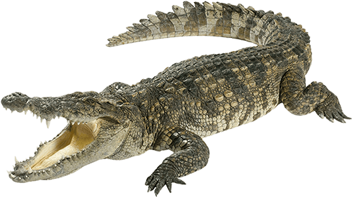

 The Crocodile
Any of about a dozen tropical reptile species found in Asia, the Australian region, Africa, Madagascar, and the Americas, Crocodiles are long-snouted, lizardlike carnivores. They swim and feed in the water, floating at the surface to wait for prey, but bask in the sun and breed on land. They are reputed to be livelier than alligators and more likely to attack humans. They have a narrower snout than alligators and a tooth on each side of the jaw that is visible when the jaw is closed.

Behavior
Crocodiles thermoregulate by alternately sunning themselves and retiring to shaded areas or cooler water. Larger individuals maintain stable body temperatures in the preferred range of 30-32 °C (86-90 °F) for several hours, even overnight. As a result, these individuals enjoy increased metabolic efficiency. Several studies of wild populations suggest that complex social relations between individuals are expressed as dominance hierarchies that allow dominant animals better access to preferred sunning and nesting sites. Some crocodiles also dig burrows into the banks of lakes or rivers. Burrows may extend for several metres in length and end in a chamber where individuals seek refuge from drought or cold.
Habitat
Crocodiles are found mainly in the lowland, humid tropics of the Northern and Southern hemispheres. Crocodiles are inhabitants of swamps, lakes, and rivers, although some species make their way to brackish water or to the sea. The estuarine (or saltwater) crocodile and the American crocodile are capable of living in marine waters and may swim miles out to sea, although both species normally occupy brackish and freshwater habitats. Glands in the tongue allow the excretion of excess salt. The smooth-fronted caiman of South America prefers rocky, fast-flowing rivers. In West Africa the dwarf crocodile is found principally in the rivers of the forest regions.
Diet
Crocodiles are predators and spend most of their time in the water. In the first weeks of life, crocodiles eat insects, crustaceans, snails, small fishes, frogs, and tadpoles. Older crocodiles mainly eat fish and are more apt to prey upon waterfowl and on mammals. Crocodiles capture water animals in their jaws with a sideways movement of the muzzle. They have sensitive pressure receptors located in pits in the scales around the mouth that detect motion; these structures assist in the capture of prey in dark or murky water. To catch land animals, a crocodile floats passively or remains motionless at the edge of the water where prey habitually drink. With a sudden lunge, it seizes an unsuspecting animal and drowns it. If the prey is large, a crocodile may grip portions of the victim in its jaws and rotate rapidly in the water to tear the prey apart.
Communication
Many crocodiles vocalize to communicate. The young of various species use several squeaking and grunting sounds, and adults may grunt, growl, and hiss. For example, Siamese crocodiles and caimans emit a loud hiss when threatened, and hatchlings of most species make sounds described as grunts or quacks. In addition, members of both sexes may produce a loud roar during the breeding season. A roaring crocodile tenses the muscles of its body so that the head and tail rise high out of the water. The flanks may vibrate so violently that water is sprayed high into the air from each side. Sounds, including roars, may be provoked by any loud noise. Many species will respond to gunshots, motors, and even people mimicking crocodile sounds. These animals also appear to communicate using chemical signals. Glands in the mandible and cloaca excrete oily chemicals that have a poorly understood function in communication.